配置tomcat结构
回顾
- 上次了解了应用服务器
- application server
- 他可以动态处理各种请求
- 我们在众多java应用服务器中选择了tomcat
- 了解了tomcat的历史
- 并且学习了下载tomcat的方法
- 还有找到本地tomcat的方法
- 这个东西能不能跑起来呢？🤔
启动 tomcat
git clone https://github.com/overmind1980/tomcat10.git
cd tomcat10
tar -zxf apache-tomcat-10.0.12.tar.gz
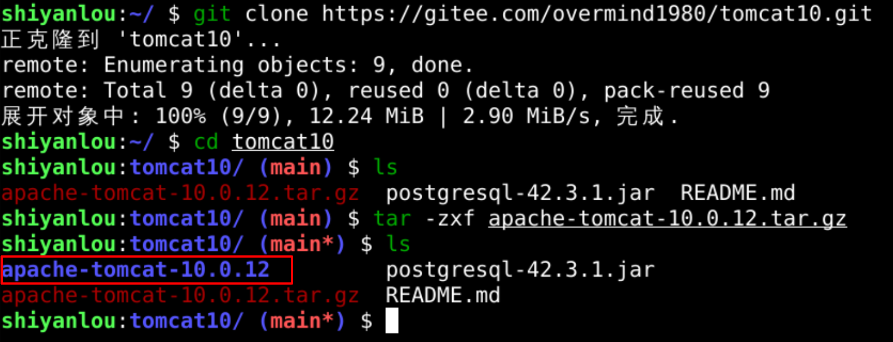
- 红框中的就是我们解压出来的tomcat文件夹
- 现在把他移动到根下去
移动到根下
sudo mv apache-tomcat-10.0.12 /tomcat
cd /tomcat
ls
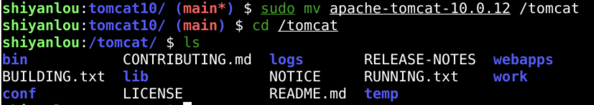
访问
- 火狐打开http://localhost:8080/
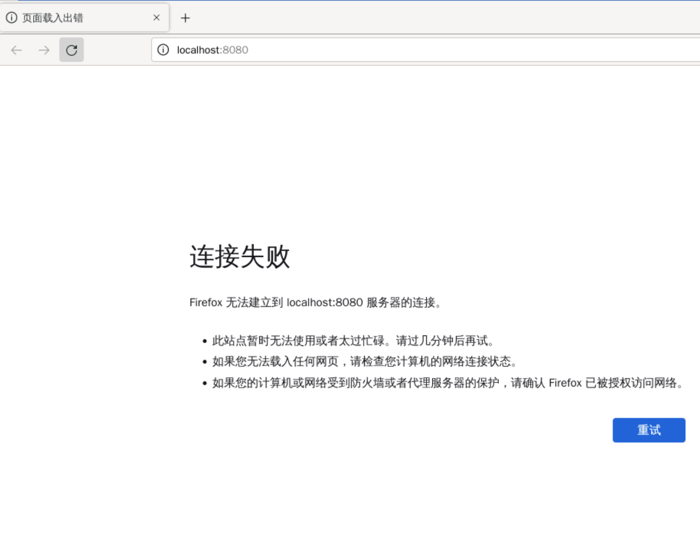
- 在浏览器中访问tomcat会如何呢？
- 貌似只是把程序拷贝过来了
- 还没有进行启动
- 服务器默认是宕机的
- 那当然无法连上服务器
启动tomcat服务器
- 进入tomcat主目录
- 这个目录的位置叫做tomcat的根下
- 找到并进入bin
- 所有的可执行脚本都在里面
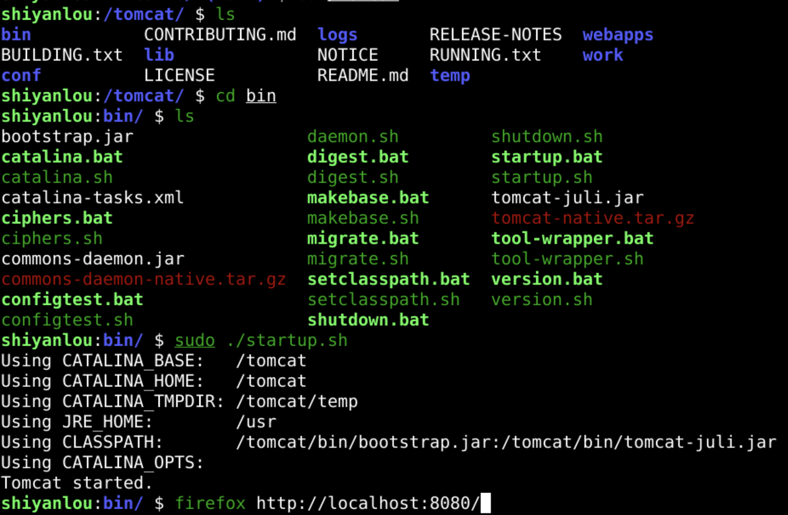
浏览器验证
firefox http://localhost:8080/
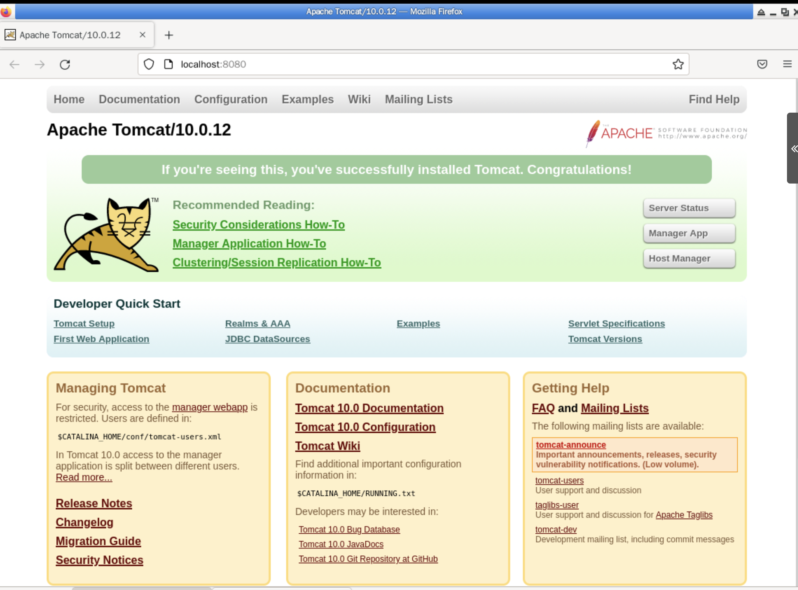
新建app
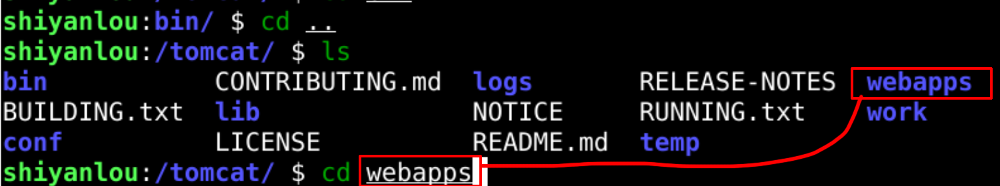
- webapps里面都是app
- web 网站
- app 应用程序
- webapp 就是网站应用程序
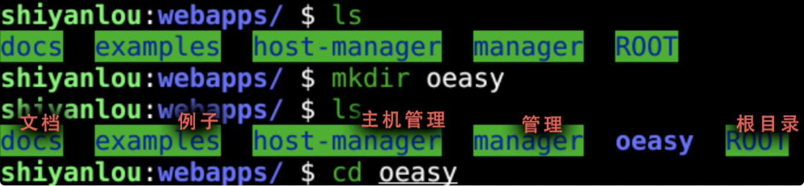
- 都有什么app呢？
- examples
- docs
- host-manager
- manager
- ROOT
- 这个应该是根目录
- 也就是 http://localhost:8080/ 对应的目录
- 如何理解app呢？
apply
- application的词根是apply
- 意思是连接到一起
- 最早指的是往身体上摸点东西
- 抹点草药这种
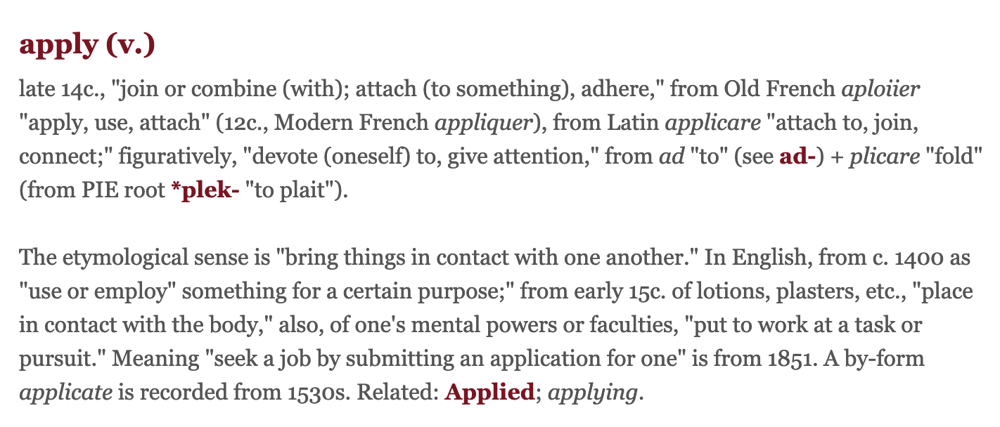
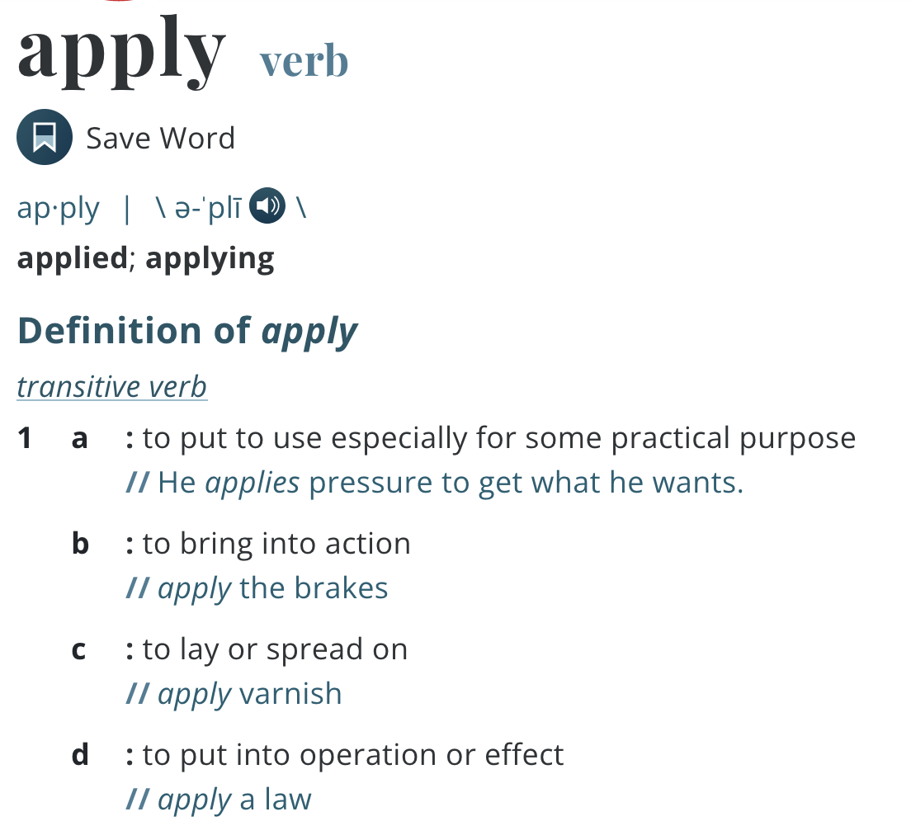
application
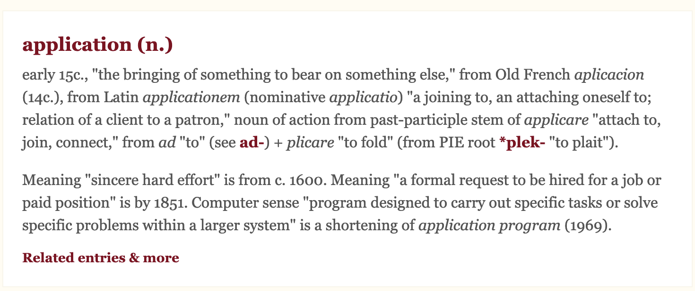
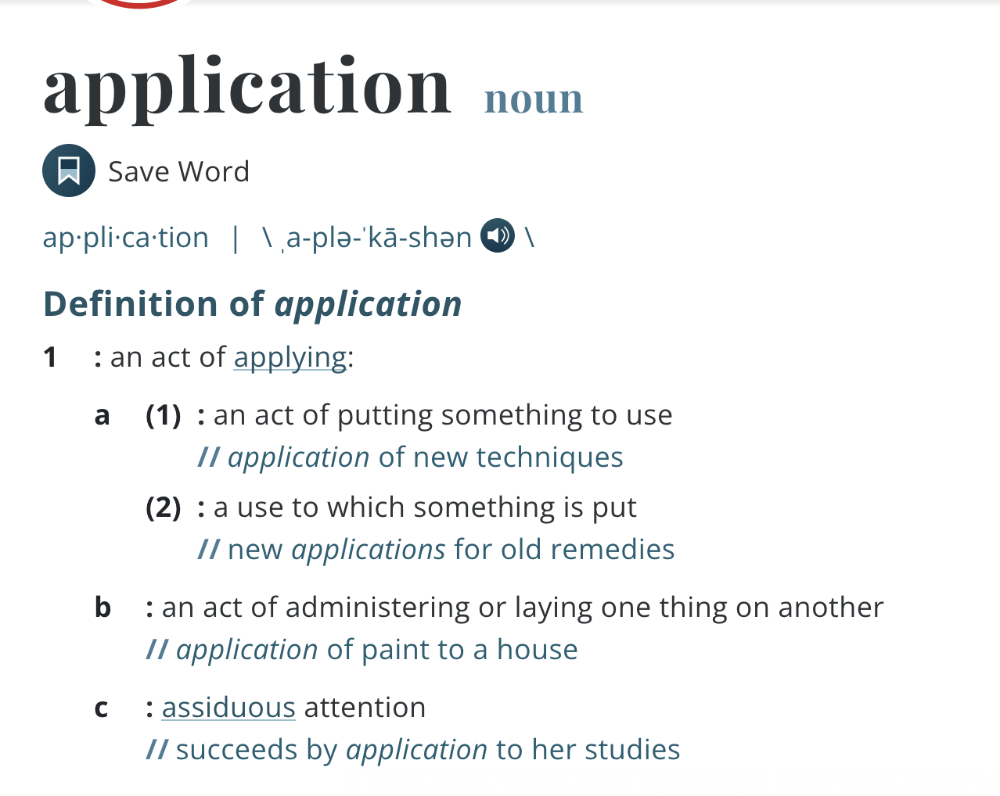
-
1969年的时候特指
- "program designed to carry out specific tasks or solve specific problems within a larger system" is a shortening of application program (1969).
- 用一个大型系统
- 来完成特定任务或者解决特殊问题的
- 程序设计
-
在webapps下新建一个oeasy文件夹
- 也就是在webapps(网页应用程序)中
- 建了一个新应用
- 叫做oeasy
网页
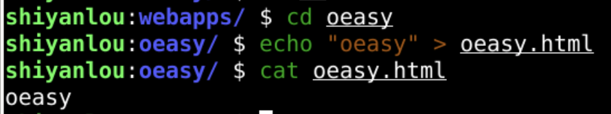
- 进入这个oeasy文件夹
- 尝试在这里新建一个静态网页
- 并在浏览器中显示
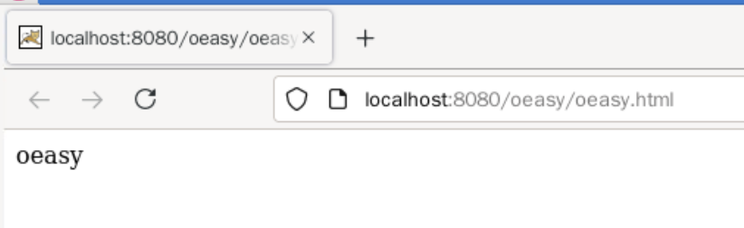
- 这个静态网页是可以看的
- 但是如何建立动态页面呢？
- 我们先总结一下
总结 🤨
- 我们这次搭建了tomcat
- 在tomcat根下找到bin
- 回到tomcat根下找到webapps
- 具体这个app应该如何搭建呢？🤔
- 下次再说！👋